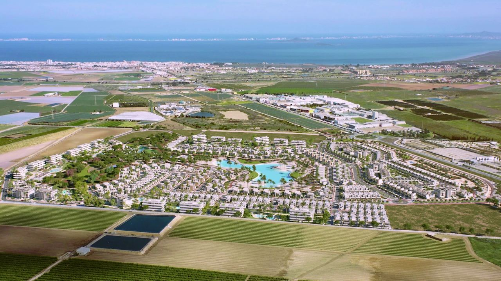
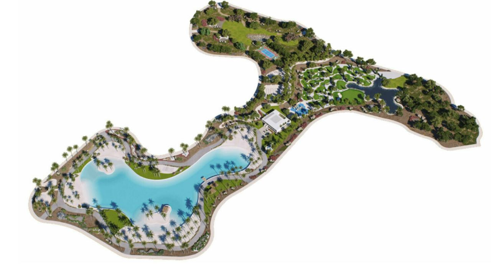
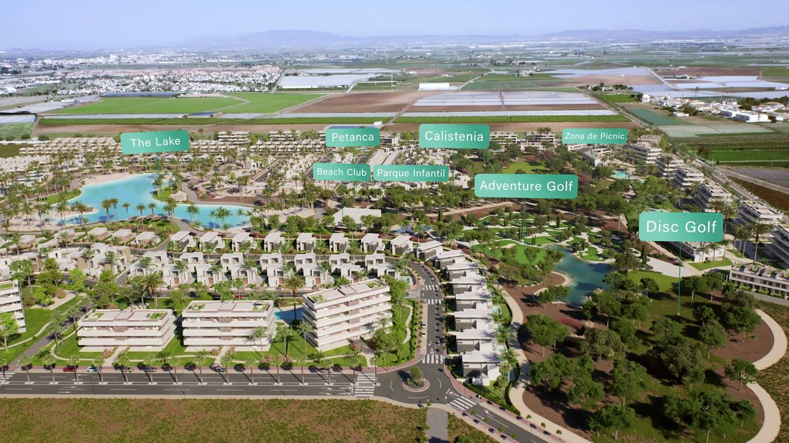
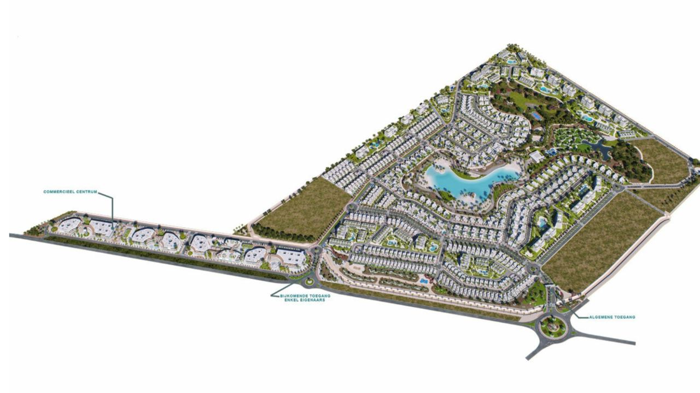
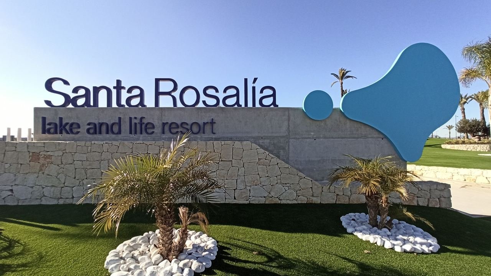

Obra nueva · Costa Cálida
Santa Rosalía Lake and Life Resort: guía para compradores
 Por Anita Orłowska · · actualizado · 3 min de lectura
Por Anita Orłowska · · actualizado · 3 min de lectura

En resumen: Santa Rosalía Lake and Life Resort es un residencial cerrado en Torre-Pacheco (Región de Murcia), en la Costa Cálida, a unos 5 minutos de Los Alcázares y el Mar Menor. Su gran atractivo es una laguna turquesa de baño de unas 1,6 hectáreas con playas de arena blanca y dos islas, construida con tecnología Crystal Lagoons, dentro de un parque de unas 12 hectáreas. Los propietarios disponen de playas, chiringuito, deportes acuáticos, pistas, gimnasio al aire libre y minigolf de aventura, además de seguridad 24 horas. Hay desde pisos hasta chalets con jardín privado. El aeropuerto de Murcia está a unos 25 minutos y el de Alicante a una hora.
Pocos residenciales en España tienen una playa en medio de la urbanización. Santa Rosalía sí, y se ha convertido en uno de los complejos más conocidos de la Costa Cálida. Esto es lo que ofrece, para quién es y qué revisar antes de comprar.
Ubicación

- Entre Los Alcázares y Torre-Pacheco, en la Región de Murcia, a unos 5 km del Mar Menor y de las siete playas de Los Alcázares.
- A unos 25 minutos en coche del Aeropuerto Internacional Región de Murcia (Corvera) y a algo más de una hora del de Alicante-Elche.
- A unos 25 minutos de Cartagena, con su teatro romano, su puerto y sus calles comerciales.
El Mar Menor es una laguna salada poco profunda de aguas cálidas y tranquilas. En los últimos años ha sufrido graves problemas de calidad del agua y hay en marcha planes de recuperación importantes; la laguna del residencial es independiente.
La laguna cristalina

En el corazón del residencial hay una laguna turquesa de unas 1,6 hectáreas, construida y gestionada con tecnología Crystal Lagoons, que mantiene el agua limpia con mucha menos energía y química que una piscina convencional. Las playas de arena blanca miran al sur, al este y al oeste, y en el agua hay dos islas, una con chiringuito. La laguna y sus jardines forman un parque de unas 12 hectáreas lleno de palmeras. Al inaugurarse fue la mayor laguna de este tipo en Europa.
Instalaciones para propietarios

- Tres playas, beach club y terrazas chill-out
- Kayak, paddle surf y windsurf en la laguna (sin embarcaciones a motor)
- Vóley playa, pistas multideporte y gimnasio al aire libre
- Zonas de yoga y pilates, praderas de pícnic y parques infantiles
- Minigolf de aventura, disc golf, petanca, ajedrez y ping-pong
- Acceso controlado y seguridad 24 horas
Las instalaciones son para residentes y se pagan con la cuota de comunidad. Pida las cuotas actuales antes de reservar.
Las viviendas

El residencial prevé bastante más de mil viviendas, construidas por fases: pisos con grandes ventanales a avenidas verdes, adosados y chalets con jardín y piscina privados. Las fases nuevas aún se construyen y venden, así que hay obra nueva y segunda mano. Las viviendas junto a la laguna son las más caras.
Para quién es y qué revisar
Santa Rosalía encaja con familias, con quien busca una segunda residencia con servicios de resort y con quien prefiere un entorno tranquilo y seguro a un centro urbano. Encaja menos con quien quiere ir andando cada día a tiendas y restaurantes.
- Fases sobre plano: exija aval bancario para cada pago. Vea obra nueva o segunda mano.
- Cuotas: la laguna y la seguridad tienen un coste; compare las cuotas de cada fase.
- Alquiler vacacional: la Región de Murcia tiene su propio registro de viviendas de uso turístico. Revise también las normas del residencial. Vea alquileres de corta duración.
- Impuestos: los impuestos de compra en Murcia son distintos de los de la Comunitat Valenciana y Andalucía. Vea cómo comprar en España.
Preguntas frecuentes
¿Dónde está Santa Rosalía Resort?
En Torre-Pacheco (Región de Murcia), entre Los Alcázares y Torre-Pacheco, a unos 5 km del Mar Menor.
¿Qué tamaño tiene la laguna?
Unas 1,6 hectáreas de agua con playas de arena blanca y dos islas, dentro de un parque de unas 12 hectáreas.
¿Puede usar la laguna cualquiera?
No. La laguna y las instalaciones son para residentes y sus invitados, y se financian con la cuota de comunidad.
¿Qué aeropuerto está más cerca?
El Aeropuerto Internacional Región de Murcia en Corvera, a unos 25 minutos en coche. Alicante-Elche está a algo más de una hora.
¿Hay viviendas a la venta ahora?
Sí, tanto en fases nuevas como de segunda mano. Pregúntenos por la disponibilidad y los precios actuales.
Visite Santa Rosalía con nosotros

Le enseñamos viviendas nuevas y de segunda mano en Santa Rosalía, comparamos las cuotas de cada fase y organizamos la visita. Contacte con nosotros.